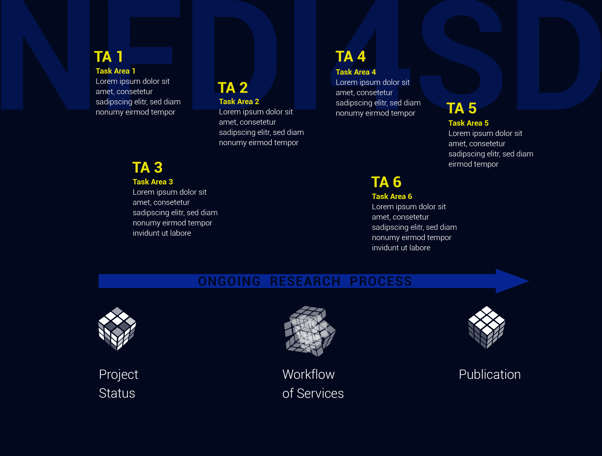

NFDI Small Disciplines (NFDI4SD)

Die Aufgabe
Das NFDI4SD eröffnet eine neue Perspektive zur Lösung eines gravierenden Problems in der gegenwärtigen Forschungssituation der sogenannten kleinen Fächer. Die Leistungen der kleinen Fächer sind hinsichtlich ihrer gesellschaftlichen und wissenschaftlichen Bedeutung der Ergebnisse enorm: Die GEPRIS-Datenbank der DFG weist ein hohes Fördervolumen aus, und der textliche Publikationsertrag ist erheblich. Auch die im Prozess der Forschung gewonnenen Daten, digitalisierten Erträge und digitalen Repositorien beeindrucken. Es fehlen jedoch sekundäre Forschungsdaten, d. h., Daten auf der Basis digitaler Quellen, daraus abgeleitete Forschungsergebnisse und speziell für Forschungszwecke erzeugte Daten – der Umfang der FAIR publizierten sekundären Forschungsdaten im Verhältnis zu den Leistungsausweisen kleiner Fächer ist verschwindend gering. Dieses steht im Gegensatz zu ihrer enormen Bedeutung. Es sind diese Daten, die andere Daten und Repositorien erschließen. Sekundärdaten sind der eigentliche Motor zukünftiger Digitalisierung. Sie verlinken die Bestände miteinander und verknüpfen Daten zu gehaltvollen Aussagen.
Dieser Umstand ist nicht den Forscherinnen und Forschern anzulasten. Vielmehr kann es wesentlich auf eine fehlende Forschungsdateninfrastruktur zurückgeführt werden, woraus sich für das NFDI4SD folgende Konsequenzen ergeben:
-
Das NFDI4SD integriert seine zahlreichen Forschungsdaten-Services in laufende Forschungsprojekte und kommt nicht erst zum Abschluss der Projekte zum Tragen. Die Services des NFDI4SD werden Teil des wissenschaftlichen Workflows und dienen nicht nur der Verwaltung und Dokumentation.
-
Forschungsdaten umfassen prinzipiell ihren Gehalt (die eigentlichen Daten) und deren Paratext. APIs und andere Rechenoperationen (computational operations) beziehen sich immer auf die Einheit von Forschungsdaten und Metadaten.
-
Die Entwicklung der Services des NFDI4SD wird durch die enge Einbindung in aktive Forschungsprojekte konsequent von den Bedürfnissen und Anwendungen der Forscher selbst gesteuert.
-
Das NFDI4SD zielt auf eine agile, umfassende Publikation der Forschungsdaten und deren FAIRe Weiternutzung durch die wissenschaftliche Gemeinschaft ab. Erprobte wissenschaftliche Publikationskonventionen werden sinngemäß auf Datenpublikationen übertragen.
-
Computations sind Bestandteil des wissenschaftlichen Arbeitsprozesses, der anhand von "computational notebooks“ der nach dem Konzept einer „literate science“ organisiert wird: Die Notebooks sind ausführbare Programme und dokumentieren zugleich im Detail – und somit für andere Forscherinnen und Forscher nachvollziehbar – die Arbeitsschritte durch Forschungsdaten.
Die Infrastruktur des NFDI4SD orientiert sich konzeptuell an den Forschungsaktivitäten der kleinen Fächer. Sie ist mit ihren Services offen für jedes wissenschaftliche Vorhaben, unabhängig von seiner disziplinären Zugehörigkeit. Forschungsgruppen bzw. Projekte aus den kleinen Fächern melden ihren Bedarf an Infrastrukturleistungen möglichst frühzeitig an (im Idealfall bereits vor Projektbeginn) und koordinieren mit dem NFDI4SD die gewünschten Services. Damit kann die NFDI4SD bereits während des Forschungsprozesses konstruktiv mitwirken und die Erzeugung, Systematisierung, Bearbeitung und Auswertung der Forschungsdaten bis zur Datenpublikation – und der folgenden Weiternutzung – unterstützen.
Forschungsdaten werden vom NFDI4SD mit modernen Mitteln der Computational Sciences nutzbar gemacht: Sie werden selbst zu "computational objects" und schaffen damit die Basis für die Erschließung bislang nicht verfügbarer Forschungspotentiale. Das NFDI4SD führt mit Forschungsdaten als "computational objects" gleichzeitig ein neues Forschungskonzept ein, wobei es sich hier nicht primär um technische Aspekte und Voraussetzungen handelt. Vielmehr werden Forschungsdaten neu verstanden und operational behandelt. Sie bilden die Synthese aus:
(1) dem Gehalt der Daten (Text, Images, 3D-Objekte, Databasen, Programme) und
(2) dem Paratext, also Informationen zur kontextuellen Umgebung der Forschungsdaten (etwa Metadaten oder Angaben zur Provenienz).
Dieses Bündel an Eigenschaften und Informationen definiert die Forschungsdaten, die im wissenschaftlichen Workflow erzeugt, publiziert und weiterverwendet werden.
Das daraus abgeleitete Verfahren erlaubt eine fruchtbare Zusammenarbeit aller internen und externen Mitwirkenden der Forschungsdateninfrastruktur mit ihren jeweils darauf zugeschnitten Aufgabenfeldern (task areas, kurz TA). Forschungsdaten werden bereits während der Projektförderung importiert, weiter bearbeitet sowie schnell und nachhaltig publiziert, beispielsweise als "computational notebooks". Mit der Registratur der Forschungsdaten des NFDI4SD wird ein weiteres wichtiges Ziel erreicht: Der vorgeschlagene Workflow macht die Abhängigkeit der Forschungsdaten untereinander transparent. Welche Forschungsdaten fließen in die Berechnungen anderer ein? Wissenschaftler bzw. Nutzer erkennen damit kritische Abhängigkeiten eigener Daten und können die Geltungsbereiche von Forschungsdaten angesichts einer sich dynamisch verändernden Forschungslandschaft besser einschätzen.
Die Terminologie (also Fachsprache, disziplinäre Kategorisierungen oder Konventionen) zu den Forschungsobjekten wird von den Projekten und ihrer disziplinären Sprachverwendung weitgehend selbst entwickelt und im Austausch mit einer spezifischen Gemeinschaft standardisiert. In den meisten Fällen wird eine angemessene Nomenklatur also bereits durch die Forschungsprojekte vorgegeben, welche vom NFDI4SD für die Aufbereitung aller Daten verwendet wird. Jedes weitere Forschungsprojekt hilft dabei, ein Netzwerk semantischer verbundener Forschungsterminologien aufzubauen. In dieser Terminologie beschreiben die Forschungsdaten die Eigenschaften einer Gruppe von untersuchten Objekten und werden zur empirischen Grundlage für die Auswertung allgemeiner wissenschaftlicher Befunde.
Die NFDI4SD Services sollen leicht verständlich und ohne große Einführung oder Studium von Handbüchern von allen Forschern genutzt werden können, die sich beim NFDI4SD angemeldet haben. Mit der Anmeldung erhalten Forscherinnen und Forscher die Zugangsberechtigung für die Cloud-Services des NFDI4SD.
-
Wissenschaftler aller Qualifikationsstufen und Gruppengrößen steuern über die Bedürfnisse ihrer Forschungsprojekte die Anforderungen an die NFDI4SD-Services. Eine Gruppe der Co-Spokesperson der task area TA1 (research fields) vermittelt und beobachtet den Abstimmungsprozess und bringt die Interessen der Forscher in das Steuerungsgremium der NFDI4SD ein. Mit schnell wachsendem Bedarf und zunehmender Differenzierung der Forschungsfelder wird die Gruppe der Co-Spokesperson aller Voraussicht nach erweitert werden.
-
NFDI4SD-Services werden z.B. von der Arbeitsumgebung eines "computational notebooks" aufgerufen. Durch eine zusätzliche Zeile im Notebook können die Funktionen anstatt von einer lokalen Installation auf die Nutzung von Cloud-Services des NFDI4SD umgeschaltet werden. TA2 entwickelt die Ressourcen für den NFDI4SD Cloud Service, insbesondere die innovativen Komponenten des Machine Learning und Big Data.
-
TA3 entwickelt und betreibt alle Leistungen und Angebote, die aus der Sicht der Weiternutzung für eine hohe Sichtbarkeit der Forschungsdaten und die kollaborative Zusammenarbeit benötigt werden. Die Forschungsdatenpublikation gehört ebenso zu diesem Aufgabenfeld wie die Aus- und Weiterbildung.
-
TA4 Die kollaborative Weiternutzung der Daten stützt sich auf Normdaten und Standards. Nutzungsmetriken sowie laufende Maßnahmen zur Qualitätssicherung (quality assessment) des NFDI4SD geben sofortige Rückmeldungen für weitere Forschungsanforderungen.
-
TA5 Ist die wichtige Schnittstelle zu allen institutionellen Partnern, externen Datenquellen und Forschungsrepositorien. Diese Abteilung arbeitet die Nutzungsverträge mit den Partnern aus. Zudem wird von hier aus die Kommunikation der Forschungsdatenpublikation und der NFDI4SD-Services für die wissenschaftliche Community und die interessierte wissenschaftliche Öffentlichkeit koordiniert.
-
Jede wissenschaftliche Publikation sowie jede Weiternutzung von Forschungsdaten betrifft Aspekte des Urheberrechtes. Forscher sollen bereits zu Beginn eines Projekts die rechtlichen Anforderungen angemessen berücksichtigen können und werden dabei z. B. von Deep-Learning-Assistenten des NFDI4SD unterstützt. NFDI4SD wird in TA6 die Mittel entwickeln, die Forschungsprojekte rechtzeitig auf die Anforderungen hinweisen und Nutzungsvorschläge im Interesse von Forschern und Wissenschaft unterbreiten.
Der Mehrwert
Researcher
Konzeptionell werden Forschungsdaten neu verwendet. Durch einen Prozess vergleichbar mit der Verwandlung eines Manuskripts in ein Buch gestaltet das NFDI4SD aus rechnerischen Inhalten wissenschaftlich verwertbare Forschungsdaten. Wissenschaftlerinnen und Wissenschaftler können bereits während der Forschungsförderung zentrale Ergebnisse publizieren und in die Community einbringen: Die Resultate werden sofort dokumentiert und fließen dann wieder in die eigenen Forschungen und die des Projektes ein. Das Konsortium NFDI4SD sorgt dafür, dass wertvollen Forschungserträge ohne zusätzlichen Aufwand und Infrastrukturkosten langfristig erhalten und zugänglich bleiben.
Wissenschaftlicher Nachwuchs
Das NFDI4SD unterstützt die angehenden Forscherinnen und Forscher bereits zu Beginn ihrer Untersuchungen, wobei keine zusätzlichen Ausgaben für diese anfallen. Während des Schreibprozesses einer Dissertation können gleichzeitig erforderliche Forschungsdaten in einem Format erstellt werden, mit dem sie sowohl in der Arbeit als Zitate ausgewiesen als auch nach dem erfolgreichen Abschluss als Forschungsdaten zusammen mit der Dissertation veröffentlicht werden. Der zu erwartende wissenschaftliche Impact wird um ein Vielfaches gesteigert.
Content provider, libraries, archives and repositories
Die mittlerweile zugänglichen digitalen Ressourcen der Bibliotheken, Archive, Repositorien und Forschungsinstitute erschließen einen wesentlichen Teil unseres kulturellen Erbes. Diese Quellen verdienen es, nicht nur passiv wahrgenommen zu werden. Mit dem neuen Konzept des NFDI4SD werden ihre Inhalte zu Forschungsdaten, die ohne erheblichen zusätzlichen Aufwand direkt in den Forschungsprozess eingehen können. Der Paratext der Forschungsdaten erhält dabei nicht nur die Angaben des Urhebers und der bereitstellenden Institution. Die weitgehende Integration der Inhalte von Forschungsdaten sorgt auch dafür, dass diese künftig in allen weiterführenden Forschungsdaten ausgewiesen werden. Der Wert institutioneller Forschungsdaten wird durch nachfolgende Publikationen zusätzlich gesteigert. Gerade kleine Sammlungen und Spezialbestände gewinnen enorm an Bedeutung, weil sie in die Gesamtheit aller Bestände gleichberechtigt und ohne Berücksichtigung der Größe integriert werden. Die Forscherinnen der Zukunft werden virtuelle Sammlungen sämtlicher Forschungsinstitutionen zur Erweiterung ihrer empirischen Basis nutzen können. Alle digitalisierten Inhalte profitieren von modernsten Machine-Learning-Techniken und einer globalen Vernetzung: So kann durch die Anwendung im Rahmen von Forschungsprojekten ohne Eigeninvestitionen der eigne Bestand erschlossen werden.
Community
Es werden Forschungsdaten verfügbar gemacht, die bislang nach Projektabschluss unveröffentlicht verschwanden. Man verstand Forschungsdaten als Mittel wissenschaftlicher Untersuchungen, die zu Ergebnissen führten – sobald letztere publiziert waren, fehlte die Infrastruktur, um die Forschungsdaten als eigenständige Forschungserträge nutzbar zu machen und auszuweisen. Künftig werden sich Forschungsdaten jedoch in allen Disziplinen und gerade in den kleinen Fächern zu eigenständigen Publikationen entwickeln. Die Qualität und Bedeutung spezieller Forschungsgebiete für die Wissenschaft insgesamt kann damit gesteigert werden. Die Eigenständigkeit der NFDI und der unterstützenden Institutionen einer europäischen open science Infrastruktur wird eine digitale Souveränität sicherstellen. NFDI4SD wird ein Nutzungs- und Datenanalyse des wichtigsten Bestandes an Forschungsdaten der Kleinen Fächer vornehmen. Diese gehören zum Kernbestand des digital cultural heritage. Seine souveräne und offene Pflege wird eine der wichtigsten Instrumente unseres cultural heritages.
Funding institution
Der wissenschaftliche Impact von geförderten Projekten wird viel schneller sichtbar und hilft den Akteuren dabei, Trends schnell zu erkennen und Bedürfnisse nach neu ausgerichteten Forschungsfeldern empirisch zu untermauern. Der Wert der Forschungsförderungen steigert sich um ein Vielfaches, da die Leistungen der geförderten Projekte durch die Forschungsdateninfrastruktur unterstützt werden. Bislang ungenutzte Ressourcen an Forschungsdaten werden ohne erheblichen Mehraufwand erschlossen und steigern erheblich den Weiternutzungswert bereits vorhandener Daten.